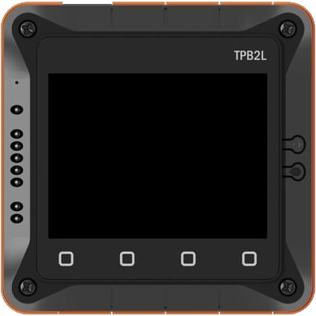
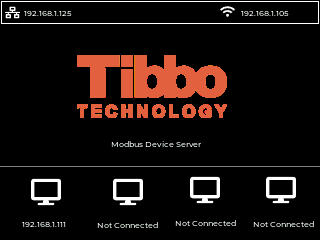

Connect serial field devices to your SCADA, PLC, or cloud without rewiring or rewriting protocol logic. Four independent Modbus channels, Ethernet and Wi-Fi, and a live LCD status screen — configurable in minutes.


Point a Modbus TCP master at a legacy RS-485 slave, or expose serial meters to a cloud gateway. The routing, framing, and timeout handling are done for you.
Route requests and replies between Modbus TCP, Modbus RTU, and Modbus ASCII masters and slaves — mix and match per channel.
Each channel has its own listening port, protocol, serial settings, and mapped target devices — run four segregated links at once.
RS-232 and RS-485 via the Tibbit 05 module, with independent baud rate, parity, data bits, and flow control per port.
Wire it into your control network or drop it onto plant Wi-Fi. DHCP or static addressing on both interfaces.
Read IP, link state, and traffic health right on the device — no laptop needed for a quick health check in the field.
Built on Tibbo's TPP2W(G2) and AppBlocks. When your application needs a tweak, the logic is open to extend — not a black box.
Confirm exact model configuration and certifications for your region with our engineering team before you spec.
| Parameter | Detail |
|---|---|
| Platform | Tibbo TPP2W(G2) programmable device, Zephyr runtime, configured with Tibbo AppBlocks |
| Function | Modbus gateway — routes requests and replies between Modbus TCP, Modbus ASCII, and Modbus RTU masters and slaves |
| Modbus channels | 4 independent channels, each with its own listening port, protocol, and mapped devices |
| Serial interface | RS-232 / RS-485 via Tibbit 05; configurable baud rate, data bits, parity, and flow control per port |
| Network | Ethernet (DHCP or static IP, netmask, gateway) and Wi-Fi (SSID, security, DHCP or static) |
| Display | On-device LCD status screen — device name, network, and link/traffic status |
| Configuration | Device name, owner name, per-channel IP/port mapping, Modbus timeout, password protection |
| Firmware / logic | Tibbo AppBlocks project (extensible); this build: Modbus Gateway with LCD, v0.1.x |
Power, environmental ratings, dimensions, and regional certifications depend on the final hardware configuration — request the datasheet for the exact figures for your build.
Tell us the protocols you're bridging and how many nodes you need to connect. An application engineer will come back with pricing, lead time, and a recommended configuration — usually within one business day.
Prefer email? sales@tibbo.com